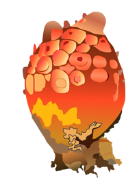

2014年8月号
「海のパイナップル」をご存じですか？

今が旬の「海のパイナップル」とはなんでしょう？
「海のミルク」＝「牡蠣（カキ）」は聞いたことあるけど、パイナップルは知りません？
という人、多いのではありませんか。
答えは「海鞘（ホヤ）」ですが、「ホヤ」という名前は聞いたことがあるけど食べたことがないという人がこれまた多いのでは。
現在流通している「ホヤ」は、そのほとんどが養殖もので、岩手と宮城の三陸両県で全国の95％を生産しています。食べ方は「生」が基本で、刺し身のほか、キュウリと一緒に二杯酢であえた酢の物が定番ですが、強烈な風味と触感が独特なため、好き嫌いがハッキリした逸品ともいえます。
特に旬である夏のホヤは栄養満点で、冬のホヤに比べてグリコーゲンの含有量が8倍あり、甘味やうま味が一層増しています。また様ざまな病気の原因となる「活性酸素」の生成を防ぐといわれる「セレン・セレニウム」というミネラルを含んだ数少ない食品です。セレン・セレニウムは、抗酸化作用で知られるビタミンEの約500倍あるといわれ、がん予防、心疾患、脳疾患の予防、血行障害などの改善に効果が期待できるほか、タウリンや鉄分といった有用成分を含んだ優等生食品なのです。
このような優れもの食品ですが、「また、食べたい」と思うか、「二度と食べたくない」と思うか、真っ二つに分かれる極端な食べ物といえますが、未だ食べたことがない人は是非、召し上がってください。
「百聞は一見に如かず」ではありませんが、「百聞は一食に如かず」です！
食べず嫌いはダメですよ～！！
「海のミルク」＝「牡蠣（カキ）」は聞いたことあるけど、パイナップルは知りません？
という人、多いのではありませんか。
答えは「海鞘（ホヤ）」ですが、「ホヤ」という名前は聞いたことがあるけど食べたことがないという人がこれまた多いのでは。
現在流通している「ホヤ」は、そのほとんどが養殖もので、岩手と宮城の三陸両県で全国の95％を生産しています。食べ方は「生」が基本で、刺し身のほか、キュウリと一緒に二杯酢であえた酢の物が定番ですが、強烈な風味と触感が独特なため、好き嫌いがハッキリした逸品ともいえます。
特に旬である夏のホヤは栄養満点で、冬のホヤに比べてグリコーゲンの含有量が8倍あり、甘味やうま味が一層増しています。また様ざまな病気の原因となる「活性酸素」の生成を防ぐといわれる「セレン・セレニウム」というミネラルを含んだ数少ない食品です。セレン・セレニウムは、抗酸化作用で知られるビタミンEの約500倍あるといわれ、がん予防、心疾患、脳疾患の予防、血行障害などの改善に効果が期待できるほか、タウリンや鉄分といった有用成分を含んだ優等生食品なのです。
このような優れもの食品ですが、「また、食べたい」と思うか、「二度と食べたくない」と思うか、真っ二つに分かれる極端な食べ物といえますが、未だ食べたことがない人は是非、召し上がってください。
「百聞は一見に如かず」ではありませんが、「百聞は一食に如かず」です！
食べず嫌いはダメですよ～！！